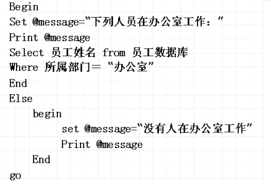
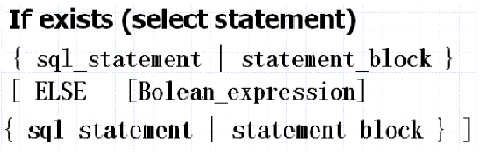

1， begin…end语句
功能：将多个transact_ SQL语句组成一个语句块，并将它们视为一个单元处理。在条件语句和循环等控制流程语句中，当符合特定条件便要执行两个或多个语句时，则需要使用此语句，例如：

2， if…else语句
if…else语句是条件判断语句，else可选，跟vb中的使用方法一样
3， if…exists语句
if后面的布尔表达式可含有select语句，如果select语句返回一个值，它可用来与另一值进行比较，以得到布尔表达式。
如果select语句返回不止一个值，可使用if exists。语法如下：

4， while语句
while语句用于设置重复执行SQL语句或语句块的条件。只要指定的条件为真，就重复执行语句。
Continue语句在某种情况下发生时，控制程序跳出本次循环，重新开始下一次while循环。语法为：
While 逻辑表达式
Begin
…
Continue
…
End
Break语句将在某些情况发生时，立即无条件的退出最内层while循环。语法与continue一样，将continue改成break
5， case表达式
case表达式可以计算多个条件式，并将其中一个符合条件的结果表达式返回。语法：
Case 字段名或变量名
when 逻辑表达式1 then 结果表达式1
when 逻辑表达式2 then 结果表达式2
when 逻辑表达式3 then 结果表达式3
else 结果表达式
end
6， return语句
用于无条件地终止一个查询，存储过程或者批处理，此时位于return语句之后的程序将不会被执行。语法形式：
Return 整数表达式